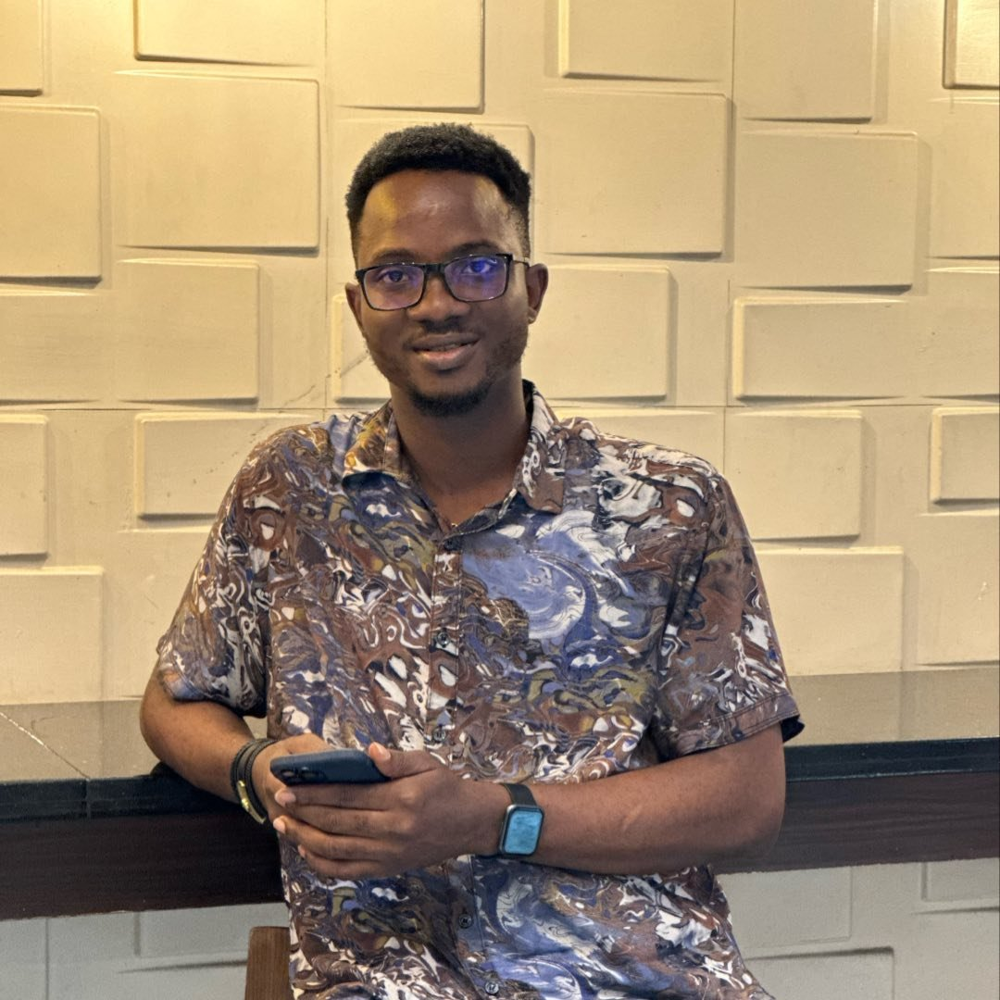

Biography
My name is Akinnuoye Timothy Oluwaseun, and I am 29 years old. I was born in Ondo state and brought up in Lagos State where i currently reside, I finished from university of Lagos where I bagged my Bsc in Business Administration and I am currently working working with Polaris Bank as a Complaint Management Officer.
My social life is something i cherish alot and thats why i love going out to have fun and enjoy my life. and thats because as hard working as i am, I want to ensure that the equation is balanced between my work life and social life
I have always loved to play soccer and watch football. and my favorite club is Arsenal Football club in England which is the best club in the world.
One of the most important things about me is that I have always wanted to become a software Engineer and i have been working hard to ensure i attain this goal, in order to get this done i started by applying to learn software programming with ALX africa but then when i started i realized that its not beginners friendly which made me stop for a while.later on i saw an advert of ALT School Africa on instagram and my twitter which got my attention and i had to quickly register for a diploma in Front end engineering and i was given admission to the School of engineering and my track was front end.
My journey in ALT School Africa has been a great one and i love it, to start with my ALT school student ID is ALT/SOE/023/2803 and secondly i was more dedicated and believed this will be a great journey in ALT School Africa when i was voted by fellow students as the President of the School of engineering. This is the beginning of great journey in ALT School Africa please follow me as i become a world class software developer.
Pictures
Why I joined ALT School Africa?
I joined ALT School Africa because they are beginners friendly and after seeing different testimonies of old students i was sure they have what it takes to make me a world class Software Engineer and so far so good they are doing a great job shout out to Shetemi Ojo, Tabitha Kayvu, Jerry Uke and the rest of ALT School Staffs keeping the flag flying.
What are my goals in ALT School?
My major goal in ALT school is to become a world class software developer and i am sure i am in the right place to do that and i thank ALT school for giving me this platform to have this great skills and for everyone out there that wants to become a world class Engineer like me please click the apply button up there to join ALT school today!